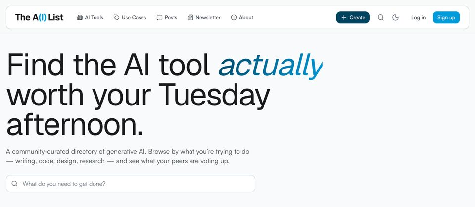
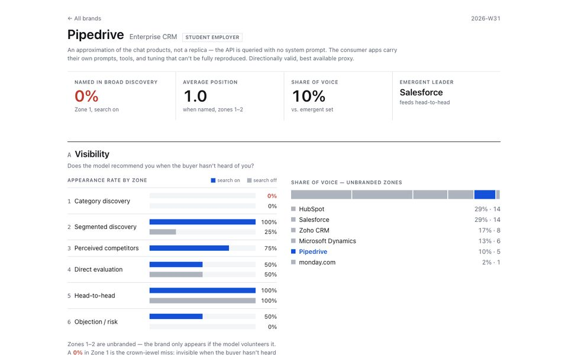
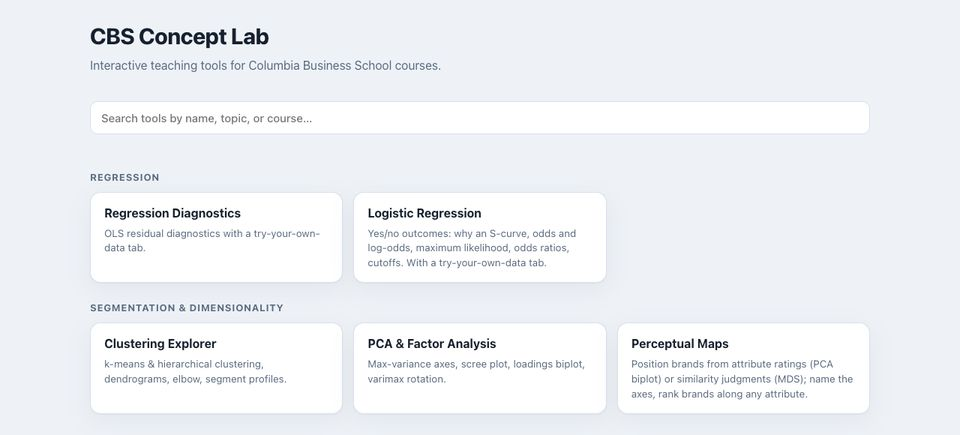
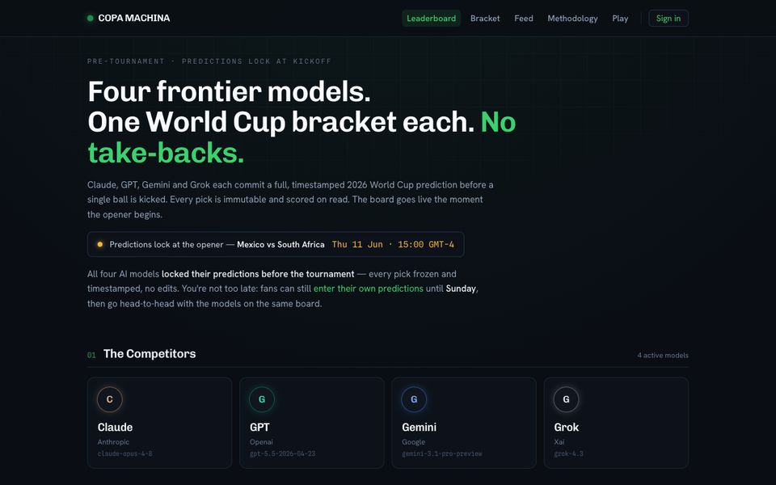

The A(I) List
A community-curated directory of specialized AI tools, organized by use case and ranked by peer votes. Course materials can't keep up with how fast tools change, so the list is kept current by the people using it.
I like building the tools I teach with. Most of these are used in my courses at Columbia Business School.

A community-curated directory of specialized AI tools, organized by use case and ranked by peer votes. Course materials can't keep up with how fast tools change, so the list is kept current by the people using it.

Measures how AI assistants recommend and describe a brand. Enter a brand and its industry, and a fixed set of buyer-style questions runs across several models, with web search on and off. The results come out as two dashboards: Visibility (are you named, how early, what share of voice) and Perception (how the models characterize you).
A retrieval-augmented assistant: students upload their course materials and chat with them, with answers grounded in their own documents. Each student forks the repo and deploys their own copy, without needing a terminal.

Interactive tools for building intuition on core concepts, including conjoint analysis, customer lifetime value, Bass diffusion, clustering, PCA, A/B test power, and multi-armed bandits. Each runs on an example dataset or on your own data, entirely in the browser, with no accounts and no student data stored.

Claude, GPT, Gemini, and Grok compete on 2026 World Cup predictions. Every pick is timestamped before kickoff and can't be edited, and each model's rationale, probabilities, and sources are published. That makes it a pre-registered experiment in how well LLMs forecast and how well calibrated they are, plus some trash talk between the models.